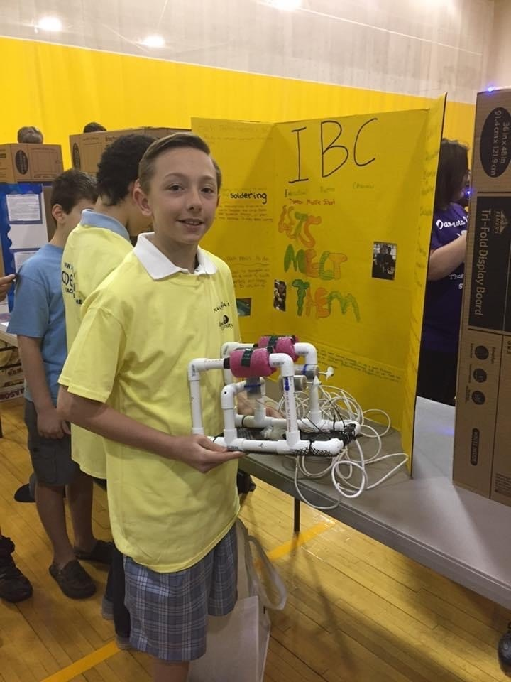
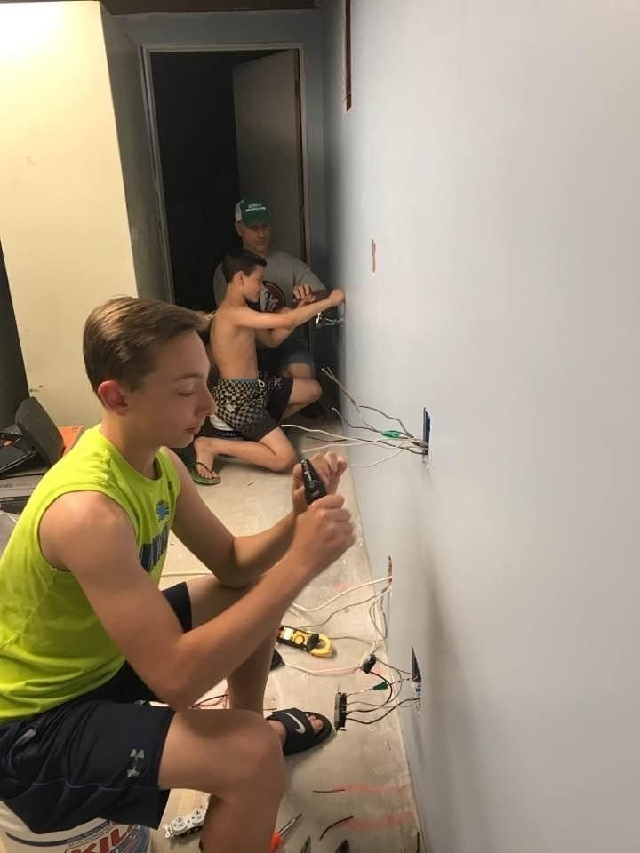
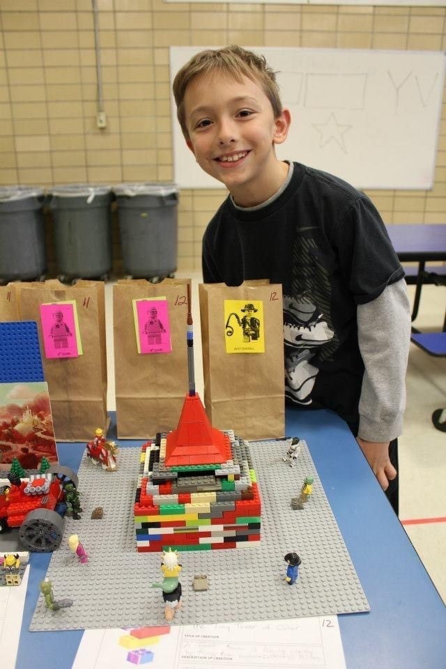
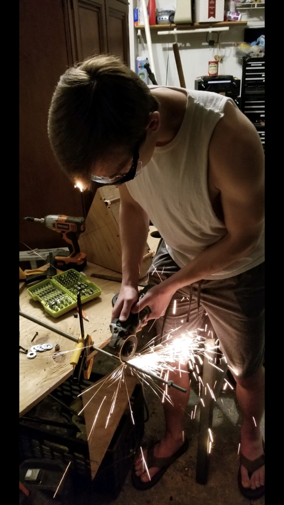

A collection of projects I've worked on, growing up in the Wisniewski Household with the family motto, "If Dad's working, we're all working".
 Me and 3 other middle schoolers designed and built an underwater robot. We ended up competing at Rowan University and winning 2nd place!  An average Saturday Morning in the Wisniewski Household  The greatest thing I've ever made and will ever make  My hair didn't burn ... very much